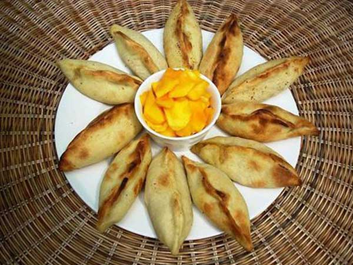

____
Традиционная еда
Уминта — Это традиционное блюдо Боливии также популярно в Чили, Эквадоре, Аргентине и Перу, но в этих странах ее называют умита. В каждой стране есть свой вариант приготовления этого блюда из кукурузы. Боливийцы, как правило, предпочитают продукт немного слаще, чем их соседи в Андах.
Антикучо — Антикучо (аnticucho) - недорогое блюдо, популярное не только в Боливии, но и в других андских странах. Оно состоит из небольших кусочков приготовленного на гриле или шампуре мяса.
Морская свинка — Морскую свинку (aka guy) народы Анд изначально одомашнили и выращивали ради мяса. На сегодняшний день она продолжает оставаться важной частью пищевого рациона боливийцев, особенно в высокогорных районах Анд.
Плато пасено — Плато пасено (plato paceño), возможно, самое известное блюдо столицы Боливии. Кусок мяса, большой картофель, початок кукурузы и фасоли. Все вместе кладут на тарелку, соль и перец по вкусу.

Пике-мачо — Пике-мачо (pique macho) традиционное блюдо Боливии. Большая тарелка еды состоит из кусочков говядины, колбасы (обычно сосиски), жаренного картофеля, лука, вареного яйца, перца, горчицы, майонеза и кетчупа.
Салтенья — Популярную во многих странах Западной Европы, Латинской Америки и некоторых частях Юго-Восточной Азии эмпанаду в Боливии называют салтенья (salteña). Начинка боливийского пирожка включает в себя мясо говядины, свинины или курицы, картофеля, гороха, морковки, сваренного вкрутую яйца, оливок или изюмома.

Сальчипапас — Сальчипапас (salchipapas) состоит из тонко нарезанных жареных говяжьих сосисок и картофеля фри, смешанного с разными соусами (как правило, кетчупа и майонеза) и перцем чили (или аджи).
Пиканте миксто — Пиканте миксто (picante mixto) являет собой сочетание нескольких разных видов мяса, как правило, курицы (picante de pollo) и коровьего языка (picante de lengua). Острота блюда исходит от аджи, популярного перца в андских странах.

Чикаррон — Чикаррон (chicharrón) готовят из свиных ребрышек, приправленных чесноком, орегано и лимоном. Блюдо сначала кипятят, затем варят в собственном жиру, добавив, пива или чичи для аромата.

____